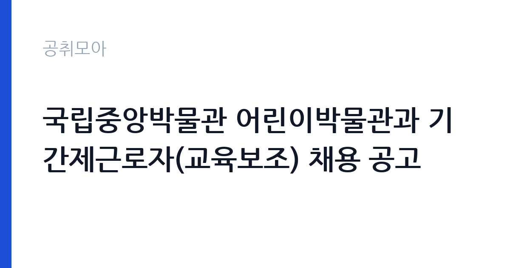

[국가기관] 국립중앙박물관 어린이박물관과 기간제근로자(교육보조) 채용 공고
문화체육관광부 국립중앙박물관 교육문화교류단 · 서울 · 마감 2026-11-11 (D-7) · 출처 나라일터

한눈에 보는 모집 조건
| 기관 | 문화체육관광부 국립중앙박물관 교육문화교류단 |
|---|---|
| 공고명 | 국립중앙박물관 어린이박물관과 기간제근로자(교육보조) 채용 공고 |
| 고용형태 | 기간제 |
| 근무지 | 서울 |
| 게시일 | 2026-11-04 |
| 마감일 | 2026-11-11 (D-7) |
지원자격, 이렇게 읽으세요
- 기간제근로자 1명
- 접수 ~2026-11-11 마감
- 세부 조건은 원문 공고문 확인
기간제 근로자는 근로계약 기간이 정해진 신분입니다. 계약 기간과 갱신 가능 여부가 근로계약서에 명시되며 기간 만료 시 근로관계가 종료됩니다. 결원 보충이나 특정 사업 기간에 맞춰 채용되는 경우가 많아 업무 범위가 명확합니다. 이번 공고는 문화체육관광부 국립중앙박물관 교육문화교류단에서 직접 진행하는 자체 전형으로, 응시자격과 제출서류는 공고문에 항목별로 제시됩니다. 이 공고는 기간제근로자 1명을 뽑는 채용으로, 접수는 2026년 11월 4일부터 11일까지입니다. 응시자격과 제출서류는 공고문에 정리되어 있으므로 원문을 확인해야 합니다. 박물관 교육 프로그램 운영 경험이나 아동 대상 활동 경력이 우대 사항으로 붙는 경우가 많습니다. 기간제 채용이므로 계약 기간과 근무 시작일을 먼저 확인하십시오. 어린이를 대면하는 업무이므로 아동 관련 범죄 경력 조회 절차가 함께 진행됩니다. 서류는 접수 마감 이후 보완이 되지 않으므로 자격 요건과 증빙 서류를 마감 전에 모두 갖춰야 합니다. 공고문에 명시된 우대 사항은 해당 여부를 확인해 증빙을 첨부해야 가점이 반영됩니다. 우대 사항에 해당하면 증빙을 반드시 첨부해야 하며, 누락하면 가점 없이 평가됩니다.
이 공고의 포인트
이 공고의 첫 번째 포인트는 고용 형태입니다. 계약 기간이 정해져 있어 근무 종료 시점이 명확합니다. 그만큼 짧은 기간에 어떤 실적을 남길지가 중요해집니다. 두 번째는 업무 범위가 명확하다는 점입니다. 어린이박물관 교육보조 직무로 채용되므로 배치 이후 담당 업무가 크게 흔들리지 않습니다. 세 번째는 근무지입니다. 서울 지역 근무로 접근성은 좋지만 그만큼 지원자가 몰리는 지역이므로 경쟁률을 넉넉히 잡아야 합니다. 자격 요건이 까다롭지 않은 대신 지원자가 몰리는 유형의 공고입니다. 다만 선발 인원이 1명으로 많지 않아 자격을 갖춘 지원자가 몰리면 경쟁률이 높아질 수 있습니다.
전형은 어떻게 진행되나
전형은 서류심사와 면접심사를 기본으로 하고 직무에 따라 필기나 실기, 체력검정이 추가됩니다. 서류 단계에서는 응시자격 충족 여부와 제출서류 형식을 확인하며 이 단계에서 탈락하는 지원자가 적지 않습니다. 면접은 직무 이해도와 경험을 확인하는 방식으로 진행되고 발표는 개별 통보나 홈페이지 게시로 이뤄집니다. 최종합격 이후에는 결격사유 조회와 채용 신체검사가 이어지며 이 절차에서 문제가 확인되면 합격이 취소될 수 있습니다. 구체적인 전형 단계와 배점은 공고문에 표로 정리되어 있으니 원문을 기준으로 준비하십시오. 전형 일정이 공고문에 날짜로 명시되어 있으니 달력에 옮겨 두고 준비하십시오.
이런 분께 추천해요
- 아동 대상 교육·체험 프로그램 운영 경험이 있는 분
- 주말·방학 기간 근무 일정을 수용할 수 있는 분
- 관람객 안내와 안전 관리에 익숙한 분
지원 전 체크리스트
- 응시자격 요건과 경력 기준을 충족하는가 — 경력은 증명서로 입증해야 합니다
- 계약 기간과 근무 시작일·종료일을 확인했는가
- 제출서류 목록을 모두 준비했는가 — 누락 시 서류 단계에서 탈락합니다
- 접수 마감 2026-11-11 이전에 접수 방식을 확인해 제출했는가
모집 일정과 제출 타이밍
2026-11-04에 공고가 올라왔고 접수는 2026-11-11까지입니다. 남은 기간은 7일이며, 이 기간에 자격증 사본과 경력증명서, 주민등록등본 같은 기본 서류를 모두 준비해야 합니다. 경력증명서는 발급에 며칠이 걸리는 경우가 있으니 가장 먼저 신청하십시오. 접수는 온라인과 우편·방문으로 나뉘는 경우가 많고, 우편 접수는 도착 기준으로 판정되므로 마감일 소인만 믿으면 안 됩니다. 면접 일정은 서류 발표 후 개별 통보되므로 제출 후에도 연락을 받을 수 있도록 유지해야 합니다. 접수 첫날에 몰리면 시스템 접속이 지연될 수 있으므로 오전 시간대 제출이 안전합니다. 서울 근무지는 대중교통 접근성이 좋은 대신 주차와 통근 시간이 변수입니다. 출퇴근 경로를 미리 확인하십시오. 마감까지 일주일 안팎이 남아 서류 준비와 증빙 발급을 병행해야 합니다. 선발 인원이 한두 명 수준이라 지원자 개개인의 서류 완성도가 그대로 평가에 반영됩니다.
직무 이해하기: 국가기관
국립중앙박물관 어린이박물관은 어린이와 가족을 대상으로 전시와 교육 프로그램을 운영하는 공간입니다. 교육보조는 프로그램 진행을 도우며 참가자 접수와 안내, 체험 재료 준비와 배포를 맡습니다. 전시실에서 어린이의 안전을 살피고 관람 예절을 안내하며, 단체 관람이 들어오면 동선을 정리합니다. 프로그램 운영 후에는 참가 인원과 만족도 자료를 정리해 담당자에게 전달합니다. 주말과 방학 기간에 프로그램이 몰리므로 그 시기에는 근무 일정이 빡빡해집니다. 현장 업무와 사무 업무의 비중은 기관의 사업 일정에 따라 계절별로 달라집니다.
자기소개서 작성 팁
지원서는 아동 대상 교육·체험 프로그램 운영 경험을 구체적으로 쓰는 것이 효과적입니다. 진행한 프로그램의 주제와 참가 인원, 준비한 재료와 진행 방식, 참가자 반응을 수치와 함께 제시하십시오. 박물관이라는 공간의 특성을 이해하고 있다는 점을 한 문단 넣으면 좋습니다. 기간제라는 조건을 인정하고 근무 기간 동안 안정적으로 프로그램을 운영하겠다는 의지를 밝히십시오. 구성은 지원 동기, 직무 경험, 기여 방안 순서가 무난합니다. 지원 동기는 문화체육관광부 국립중앙박물관 교육문화교류단의 사업 중 본인이 관심을 가진 부분을 한 가지로 좁혀 서술하고 추상적인 표현은 줄이십시오. 직무 경험은 담당했던 업무와 규모, 결과를 수치로 제시하면 설득력이 올라갑니다. 기여 방안은 입사 후 첫 3개월과 1년 계획으로 나눠 쓰면 준비도가 드러납니다.
면접 준비 포인트
면접에서는 프로그램 운영과 아동 응대 경험을 확인합니다. 참가 아동이 프로그램에 집중하지 않을 때 어떻게 이끌지, 보호자가 요구를 할 때 어떻게 안내할지 묻습니다. 단체 관람이 겹칠 때 동선을 어떻게 정리할지도 질문 대상입니다. 교육 프로그램을 진행해 본 경험이 있다면 대상 인원과 프로그램 내용을 구체적으로 답하십시오. 답변은 상황, 판단, 조치의 순서로 정리하면 전달이 분명해집니다. 모르는 질문에는 모른다고 밝히고 확인 방법을 제시하는 편이 억지 답변보다 낫습니다. 마지막에는 근무 의사와 함께 2026-11-11 이후 일정에 언제든 응할 수 있다는 점을 전달하십시오. 답변 시간이 짧게 정해져 있는 경우가 있으므로 핵심 문장을 먼저 말하고 근거를 붙이는 방식이 유리합니다.
급여·근무조건 읽는 법
국립중앙박물관 기간제근로자의 보수는 공무직·기간제 임금 기준에 따라 정해지며, 기본급에 정액급식비와 명절휴가비, 초과근무수당이 더해집니다. 기간제 채용이므로 계약 기간과 월 급여를 함께 확인해야 총액을 알 수 있습니다. 구체적인 금액은 공고문 처우 항목에서 확인해야 하며, 확인되지 않은 수치는 이 글에서 제시하지 않습니다. 2026년 적용 최저임금은 시급 10,320원, 월 환산 2,156,880원(주 40시간·209시간 기준)입니다. 고용노동부 고시 제2025-47호로 확정된 금액입니다. 공고문에 금액이 제시되지 않은 항목은 원문 보수표나 처우 설명에서 확인해야 하며 확인되지 않은 수치는 쓰지 않는 것이 원칙입니다. 비교할 때는 월 급여뿐 아니라 상여·명절휴가비·복지포인트·초과근무수당까지 포함한 연간 총액으로 계산하십시오. 기간제라면 계약 기간 동안의 총액을, 무기계약이라면 호봉 상승과 정년까지의 누적 소득을 기준으로 판단하는 편이 정확합니다.
자주 묻는 질문
- 선발 인원은 몇 명인가요?
공고문 기준 1명입니다. 직종별로 인원이 나뉘는 경우가 있으니 모집분야 항목을 함께 확인하십시오. - 근무지는 어디인가요?
서울 지역의 문화체육관광부 국립중앙박물관 교육문화교류단 소속 근무지입니다. 세부 주소와 출퇴근 조건은 원문 공고문에서 확인할 수 있습니다. - 보수는 얼마인가요?
채용 신분(기간제)과 기관 임금 규정에 따라 정해지며 구체적인 금액은 공고문 처우 항목에 제시됩니다. 금액이 공개되지 않은 경우에는 원문의 보수표를 확인하십시오.
함께 보면 좋은 공고
[국가기관] 2026년 제7회 광양우체국 상시계약집배원 채용 공고 — 마감 2026-11-12[국가기관] 제8회 서천우체국 기간제 상시계약집배원(농어촌) 채용 재공고 — 마감 2026-11-12[국가기관] 해병대 덕산대 체력단련장(경기 화성) 공무직근로자 (경기담당) 채용 공고 — 마감 2026-11-13출처: 나라일터 공개정보를 바탕으로 공취모아가 정리한 안내글입니다. 모집 조건·일정은 변경될 수 있으니 지원 전 반드시 원문 공고문을 확인하세요. 본 글은 정보 제공용이며 합격을 보장하지 않습니다.